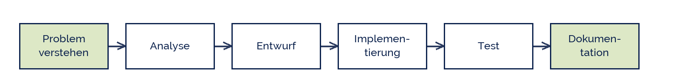
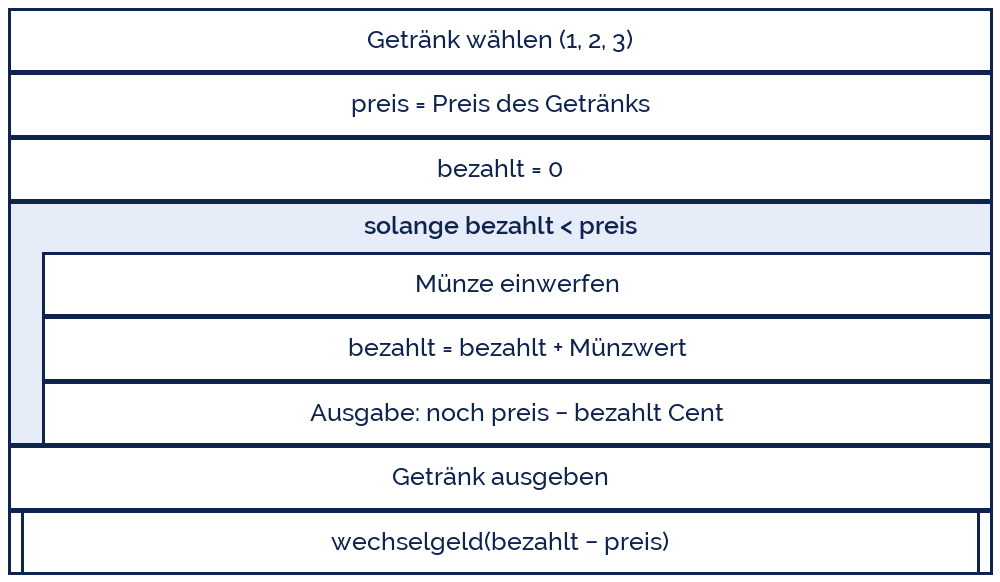

MemoryCatcher
MemoryCatcher
Good morning!
Nur das Schöne wird die Welt retten!
Fjodor Dostojewski
Nicht verzagen, Doc Alvers fragen!
Informatik — FOS 12
Die ganze Kette
Problem → Entwurf → Programm → Test: Komplexübung und Codereview
Nicht verzagen, Doc Alvers fragen!
Kapitel 01
Problemlösen
Sechs Phasen, und keine davon heißt „drauflostippen“
Nicht verzagen, Doc Alvers fragen!
Die Problemlösungskette

Jede Phase hat ein sichtbares Ergebnis: Aufgabentext, Datenliste, Struktogramm, Code, Testtabelle, Beschreibung
Wer eine Phase überspringt, holt sie später teurer nach — meist in der Fehlersuche
Rückschritte sind erlaubt: ein Testfehler schickt euch zurück in den Entwurf
Nicht verzagen, Doc Alvers fragen!
Was in jeder Phase zu tun ist
| Phase | Leitfrage | Ergebnis |
|---|---|---|
| Problem verstehen | Was genau soll herauskommen? | Aufgabe in eigenen Worten, 3 Sätze |
| Analyse | Welche Daten rein, welche raus? | Liste der Eingaben, Ausgaben, Regeln |
| Entwurf | In welchen Schritten? | Struktogramm, Funktionsnamen |
| Implementierung | Wie heißt das in Python? | lauffähiges Programm |
| Test | Stimmt es auch? | Testtabelle mit Soll und Ist |
| Dokumentation | Versteht es ein anderer? | Kommentare, kurze Beschreibung |
Die Analyse ist die Phase, die am häufigsten übersprungen wird — und am meisten Zeit spart
Nicht verzagen, Doc Alvers fragen!
Kapitel 02
Die Aufgabe
Ein Getränkeautomat, der wirklich rechnet
Nicht verzagen, Doc Alvers fragen!
Aufgabenstellung
Ein Automat verkauft drei Getränke: Wasser 1,20 € · Saft 1,80 € · Kaffee 2,50 €
Der Kunde wählt ein Getränk und wirft nacheinander Münzen ein
Der Automat zeigt nach jeder Münze den Restbetrag an
Ist genug bezahlt, gibt er das Getränk aus und berechnet das Wechselgeld
Das Wechselgeld wird in möglichst wenigen Münzen ausgegeben (2 €, 1 €, 50 ct, 20 ct, 10 ct)
Nicht verzagen, Doc Alvers fragen!
Analyse: Eingaben, Ausgaben, Regeln
| was | Typ / Wertebereich | |
|---|---|---|
| Eingabe | Getränkewahl | 1, 2 oder 3 — alles andere abweisen |
| Eingabe | Münzwert in Cent | 10, 20, 50, 100, 200 |
| Ausgabe | Restbetrag nach jeder Münze | Cent, nie negativ angezeigt |
| Ausgabe | Getränk + Wechselgeldstückelung | Anzahl je Münzsorte |
| Regel | Preise in Cent rechnen | int statt float — keine Rundungsfehler |
Der wichtigste Entwurfsentscheid steht in der letzten Zeile: alles in Cent
Damit ist 0.1 + 0.2 kein Thema mehr — die Kasse stimmt auf den Cent
Nicht verzagen, Doc Alvers fragen!
Entwurf: das Hauptprogramm
Eine while-Schleife, die endet, sobald genug Geld drin ist
Das Wechselgeld ist ein eigenes Teilproblem — Aufruf-Kasten
Die Auswahl des Getränks lohnt sich als eigene Funktion mit Prüfung der Eingabe

Nicht verzagen, Doc Alvers fragen!
Kapitel 03
Umsetzung
Vom Entwurf zum Gerüst
Nicht verzagen, Doc Alvers fragen!
Das Gerüst — die Funktionen zuerst
PREISE = {1: 120, 2: 180, 3: 250} # alles in Cent
MUENZEN = [200, 100, 50, 20, 10]
def waehle_getraenk():
wahl = 0
while wahl not in PREISE:
wahl = int(input('1 Wasser, 2 Saft, 3 Kaffee: '))
return wahl
def kassiere(preis):
bezahlt = 0
while bezahlt < preis:
muenze = int(input(f'noch {preis - bezahlt} ct - Muenze: '))
if muenze in MUENZEN:
bezahlt = bezahlt + muenze
else:
print('Muenze wird nicht angenommen')
return bezahltNicht verzagen, Doc Alvers fragen!
Das Wechselgeld — das eigentliche Problem
def wechselgeld(rest):
for muenze in MUENZEN: # gross nach klein: gieriges Verfahren
anzahl = rest // muenze
if anzahl > 0:
print(f'{anzahl} x {muenze} ct')
rest = rest % muenze
wahl = waehle_getraenk()
preis = PREISE[wahl]
bezahlt = kassiere(preis)
print('Getraenk wird ausgegeben.')
wechselgeld(bezahlt - preis)Nicht verzagen, Doc Alvers fragen!
Warum das Verfahren funktioniert
Immer die größte passende Münze nehmen — das heißt gieriges Verfahren (greedy)
// liefert die Anzahl, % den verbleibenden Rest — genau die beiden Operatoren aus Woche 13
Beim Euro klappt das immer mit der kleinsten Münzzahl — das ist nicht bei jedem Münzsystem so
Gegenbeispiel: mit Münzen 1, 3, 4 wären für 6 zweimal 3 optimal — gierig nimmt 4 + 1 + 1
Merke: Ein Verfahren, das oft stimmt, ist noch kein Beweis, dass es immer stimmt
Nicht verzagen, Doc Alvers fragen!
Kapitel 04
Codereview
Fremden Code lesen ist die halbe Ausbildung
Nicht verzagen, Doc Alvers fragen!
Review-Checkliste für die Partnerarbeit
| Bereich | Frage an den Code | Befund |
|---|---|---|
| Verständlich | Sagen die Namen, was sie enthalten? | ________________ |
| Struktur | Hat jede Funktion genau eine Aufgabe? | ________________ |
| Korrekt | Stimmen die Grenzfälle (0, genau passend, zu viel)? | ________________ |
| Robust | Was passiert bei einer falschen Eingabe? | ________________ |
| Test | Gibt es eine Testtabelle mit Soll und Ist? | ________________ |
| Doku | Versteht man in 2 Minuten, was das Programm tut? | ________________ |
Reviewt in Partnerarbeit: einer erklärt, einer fragt — dann tauschen
Nicht verzagen, Doc Alvers fragen!
Wie man Rückmeldung gibt
Über den Code reden, nicht über die Person: „diese Funktion macht zwei Dinge“ statt „du machst das falsch“
Fragen statt Urteilen: „Was passiert hier bei einer Eingabe von 0?“
Konkret werden: Zeile nennen, Beispiel nennen, Vorschlag machen
Auch loben, was gut ist — gute Namen und gute Testfälle sind nicht selbstverständlich
Und als Autor: zuhören, nicht verteidigen. Der Code muss ohne euch verständlich sein
Nicht verzagen, Doc Alvers fragen!
Ein Programm wird einmal geschrieben und hundertmal gelesen. Schreibt für die Leser.
Merksatz
Nicht verzagen, Doc Alvers fragen!
Fun Facts: Problemlösen
George Pólya beschrieb 1945 in „How to Solve It“ dieselben vier Schritte — für Mathematik, nicht für Computer
Beim Rubber Duck Debugging erklärt man seinen Code einer Gummiente — und findet den Fehler beim Reden
Studien zeigen: Codereviews finden mehr Fehler als Testen — und die teuersten zuerst
Das Münzwechselproblem ist ein Klassiker der Optimierung; gierig ist schnell, aber nicht immer optimal
Nicht verzagen, Doc Alvers fragen!
Eure Abgabe zum Abschluss von LB 2
Ein lauffähiger Getränkeautomat mit mindestens vier Funktionen
Das Struktogramm des Hauptprogramms und je eines für zwei Funktionen
Eine Testtabelle mit mindestens sechs Fällen, darunter Randfälle
Ein ausgefülltes Reviewblatt von eurem Partner — mit einem Punkt, den ihr danach geändert habt
In Woche 22 kommt die Klausur über LB 2 und OOP — dieses Projekt ist die beste Vorbereitung
Nicht verzagen, Doc Alvers fragen!